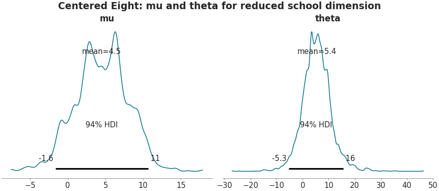

Posterior Plot (reducing school dimension)#
See also
API Documentation: plot_posterior()

import matplotlib.pyplot as plt
import arviz as az
az.style.use("arviz-doc")
data = az.load_arviz_data("centered_eight")
coords = {"school": ["Choate", "Mt. Hermon", "Deerfield"]}
axes = az.plot_posterior(
data,
var_names=["mu", "theta"],
combine_dims={"school"},
coords=coords,
figsize=(11.5, 5),
)
fig = axes.flatten()[0].get_figure()
fig.suptitle("Centered Eight: mu and theta for reduced school dimension")
plt.show()
import arviz as az
data = az.load_arviz_data("centered_eight")
coords = {"school": ["Choate", "Mt. Hermon", "Deerfield"]}
ax = az.plot_posterior(
data,
var_names=["mu", "theta"],
combine_dims={"school"},
coords=coords,
backend="bokeh",
)